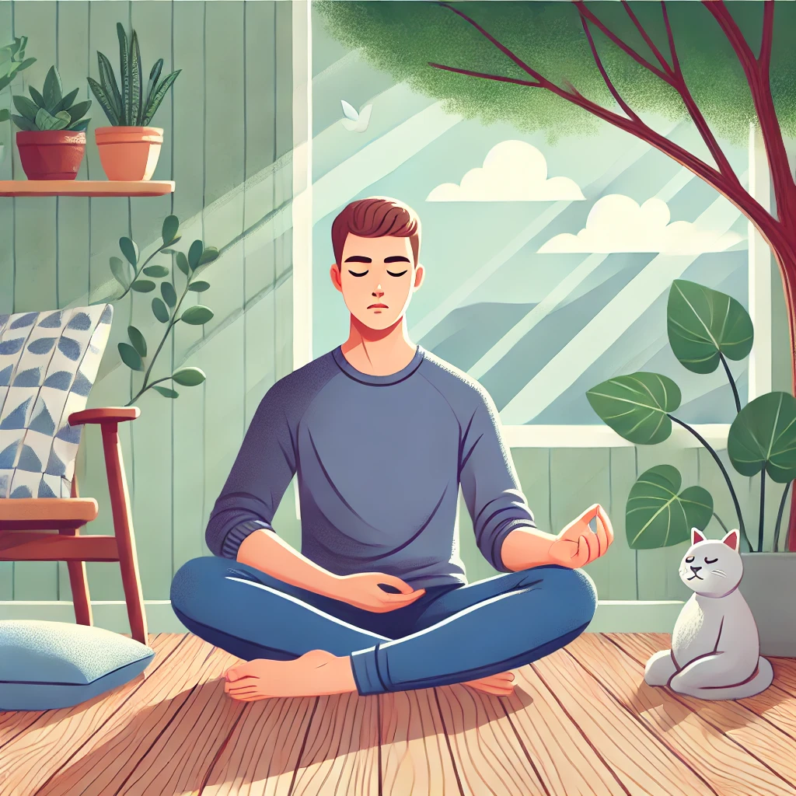
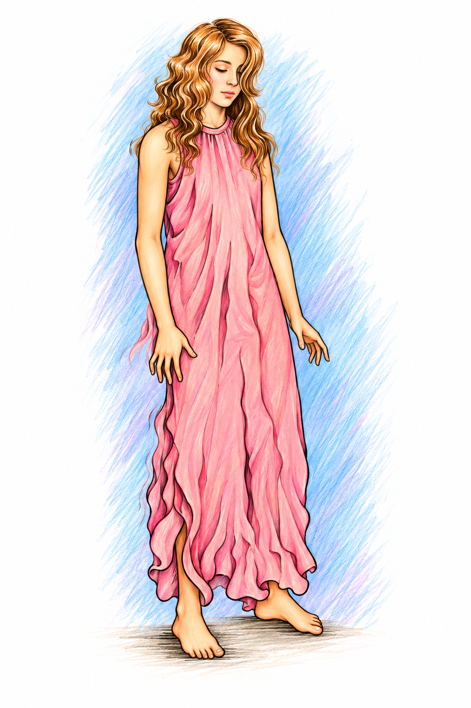
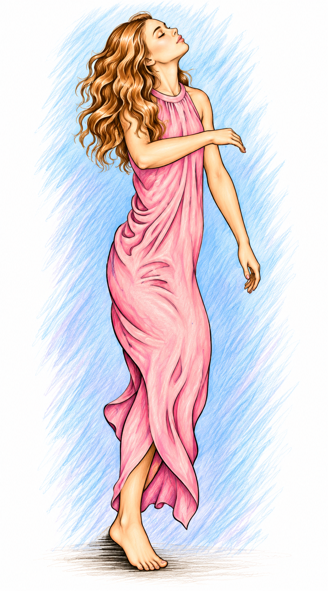
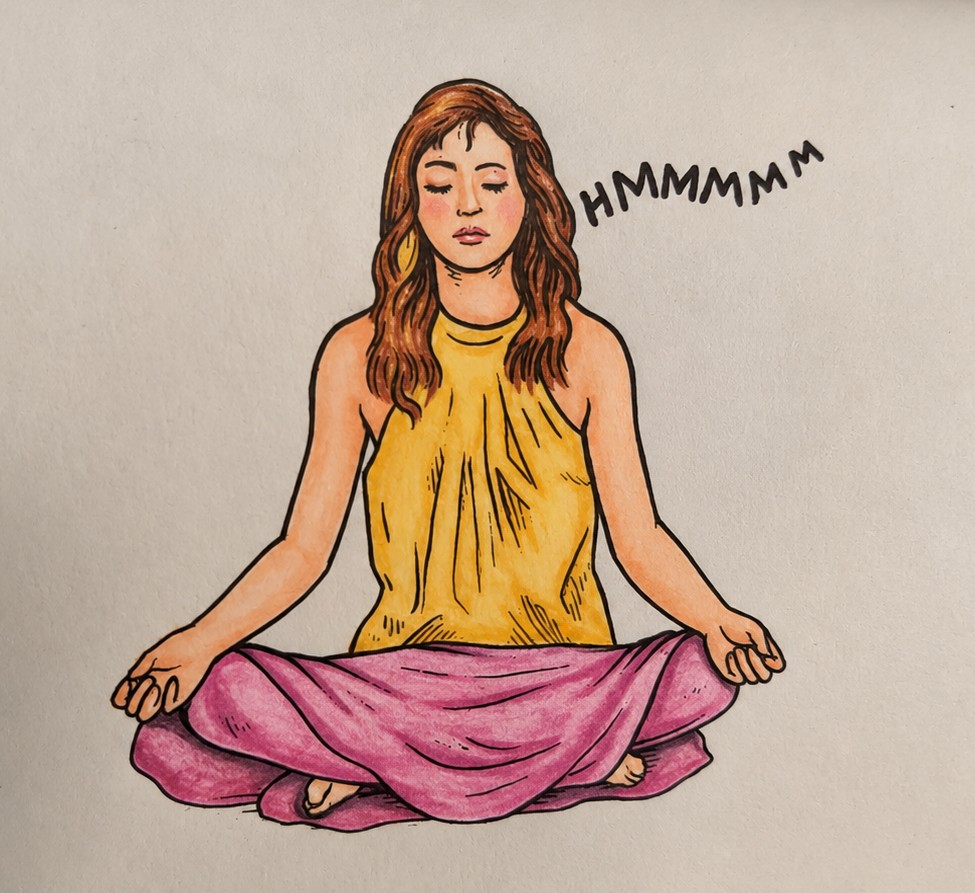
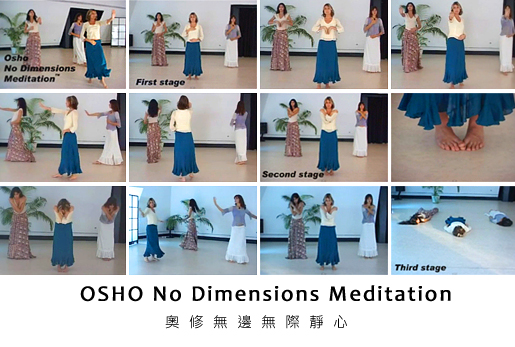
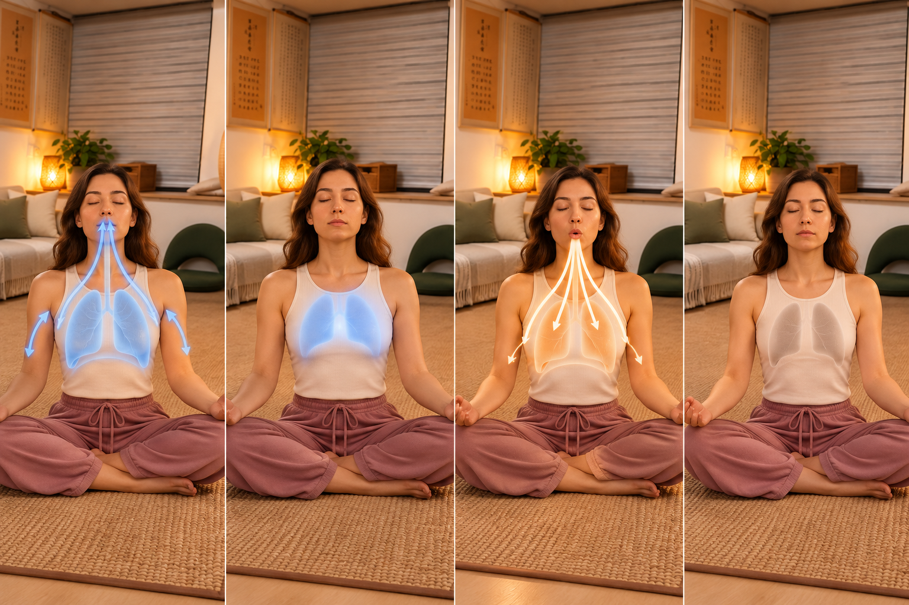
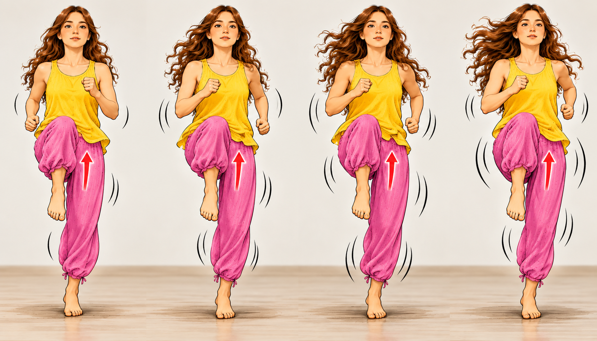
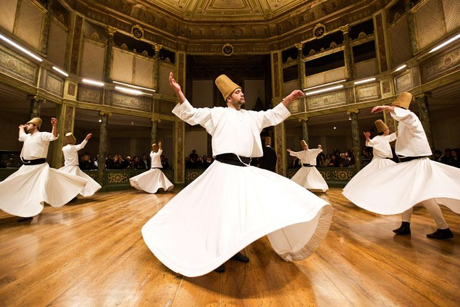
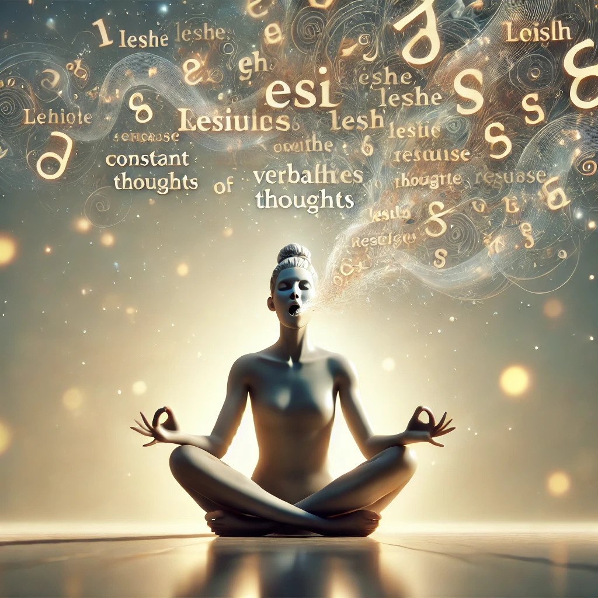

Beobachten: Die Seele der Meditation
Der Kern der Meditation besteht nicht darin, eine besondere Erfahrung zu erzeugen, sondern in Handlung, Gedanken und Gefühl bewusst zu bleiben, ohne das Zentrum zu verlieren.
Diese Karte lesenDu musst nicht zuerst jede Methode verstehen. Wähle eine aus und geh ganz hinein; wenn du tiefer gehen möchtest, folge dem Buch Schritt für Schritt.
Du musst nicht alles auf einmal lernen. Aktive Meditationen bringen zuerst Körper und Energie in Bewegung; passive Meditationen führen direkter über Atem, Annehmen und Beobachten nach innen.

Führe die Energie zu einem Höhepunkt und geh dann in Nicht-Tun und Beobachten über.
Zur Praxis →
Lass den Körper aus der Starrheit in den Fluss kommen und beobachte anschließend in Stille.
Zur Praxis →
Nicht „Ich tanze“ – lass den Tanz von selbst geschehen.
Zur Praxis →
Nutze Summen und feine Bewegungen, um Körper und Geist in Einklang zu bringen.
Zur Praxis →
Eine vollständige Abfolge wiederholter Bewegungen, Wirbeln und Stille.
Zur Praxis →
Atem, Licht, spontane Bewegung und Stille entfalten sich in mehreren Phasen.
Zur Praxis →
Baue einen Kreis intensiver Energie auf und kehre dann zum Zentrum zurück.
Zur Praxis →
Lass den äußeren Körper zu einem sich drehenden Rad werden, während das innere Zentrum still bleibt.
Zur Praxis →
Leere den sprachlichen Geist und geh dann ins Sitzen und Loslassen über.
Zur Praxis →Wähle zuerst aktiv oder passiv und grenze dann nach Atmung, Bewegung, Klang, Katharsis, Sitzen, Schlafenszeit und mehr ein.
Wenn du einen Gedanken sehen kannst, musst du nicht zu jedem Gedanken werden.
Die Praxis kann heute beginnen; das Verstehen darf sich Schicht für Schicht entfalten. Die fünf Teile bleiben geschlossen, bis du sie öffnen möchtest.
Behandle dies nicht wie eine Liste, bei der mehr besser wäre. Wähle intuitiv eine Methode und erfahre sie selbst. Wenn sie sich vertraut und richtig anfühlt, bleib bei ihr und geh tiefer. Die Richtung jeder Methode ist dieselbe: Bewusstheit, Beobachten und die Rückkehr ins Hier und Jetzt.
Richte zuerst die Richtung aus: Meditation bedeutet nicht, dem Leben zu entfliehen, sondern das Beobachten mitten im Leben zu entdecken.
Vom einfachen Sein zum Beobachten: Körper, Gedanken, Gefühle und schließlich Bewusstheit selbst.
Der Kern der Meditation besteht nicht darin, eine besondere Erfahrung zu erzeugen, sondern in Handlung, Gedanken und Gefühl bewusst zu bleiben, ohne das Zentrum zu verlieren.
Diese Karte lesenStille, Sensibilität, Liebe, Mitgefühl, Freude, Intelligenz, Alleinsein und dein wahres Selbst.
Stille ist nicht nur das Fehlen äußerer Geräusche; sie ist ein innerer Raum, der von Veränderungen um ihn herum nicht gestört wird.
Diese Karte lesenMeditation macht einen Menschen nicht stumpf und zurückgezogen; sie verfeinert und bereichert die Fähigkeit, das Leben zu fühlen.
Diese Karte lesenDas Buch sieht Liebe als den Duft, der natürlich aus Meditation entsteht: nicht das Festhalten an einer Person, sondern eine innere Qualität, die sich mitteilen möchte.
Diese Karte lesenIn der Sprache des Buches ist Mitgefühl die Qualität, die erscheint, wenn Liebe und Meditation sich begegnen.
Diese Karte lesenDas Buch unterscheidet Glück, das durch äußere Bedingungen ausgelöst wird, von einer inneren Freude, die keinen besonderen Grund braucht.
Diese Karte lesenHier bedeutet ‚Intelligenz‘ nicht die Menge deines Wissens, sondern die Fähigkeit, frisch auf die wirkliche Situation vor dir zu antworten.
Diese Karte lesenIm Buch bedeutet Alleinsein nicht Isolation. Es bedeutet, Freude im eigenen inneren Raum finden zu können.
Diese Karte lesenMeditation erschafft kein besseres ‚Ich‘; sie hilft dir, die Natur unter Gewohnheiten, Rollen und gesellschaftlichen Erwartungen zu entdecken.
Diese Karte lesenLerne, Methoden zu benutzen, ohne an sie gebunden zu werden.
Wie man Techniken benutzt und zugleich erinnert, dass Techniken schließlich der Bewusstheit weichen.
Methoden können viel Umherirren ersparen, aber eine Methode selbst ist nicht Meditation. Ihr Zweck ist, dich zum Beobachten zu führen.
Diese Karte lesenAm Anfang gibt es Tun, doch wenn eine Methode reift, muss Anstrengung allmählich dem Nicht-Tun weichen.
Diese Karte lesenJe einfacher eine Methode ist, desto schwerer kann der Geist ihr vertrauen, denn das Ego bevorzugt Schwierigkeiten, die es bezwingen kann.
Diese Karte lesenVerstehe eine Methode klar, bevor du sie praktizierst. Vermische, verändere oder ‚verbessere‘ sie nicht beiläufig nach persönlichem Geschmack.
Diese Karte lesenSpiele mindestens drei Tage mit einer Methode. Wenn sie sich vertraut und natürlich richtig anfühlt, gib ihr deine Aufmerksamkeit und geh tiefer.
Diese Karte lesenEine Methode ist ein Boot zum Überqueren des Flusses: Benutze es, wenn es gebraucht wird, und wenn du wirklich am anderen Ufer angekommen bist, trage das Boot nicht auf dem Kopf weiter.
Diese Karte lesenDas Buch behandelt Vorstellungskraft als eine reale psychologische Fähigkeit. Sie kann Teil einer Methode sein, darf aber nicht mit der letzten Wirklichkeit verwechselt werden.
Diese Karte lesenBereite Zeit, Ort und Körper auf die Praxis vor und verstehe, warum Katharsis möglicherweise zuerst kommen muss.
Nimm dir am Anfang wirklich einen Zeitraum, in dem die Meditation nicht unterbrochen wird.
Diese Karte lesenAm Anfang kann die Umgebung dich unterstützen. Wenn Meditation stabiler wird, hängt sie immer weniger von der Umgebung ab.
Diese Karte lesenDer Maßstab für eine Haltung ist nicht, ob sie korrekt aussieht, sondern ob der Körper allmählich vergessen werden kann.
Diese Karte lesenWenn sich im Inneren viel angesammelt hat, schlägt das Buch vor, mit Bewegung, Ausdruck und Katharsis zu beginnen, bevor du in die Stille gehst.
Diese Karte lesenDie gemeinsame Haltung hinter allen Methoden: Entspannung, Beobachten, Nicht-Urteilen und das allmähliche Hinausgehen über Ergebnisse und Erfahrungen.
Unabhängig von der äußeren Form einer Methode führt das Buch den gemeinsamen Kern auf drei Dinge zurück: Entspannung, Beobachten und Nicht-Urteilen.
Diese Karte lesenMeditation zu einer schweren Aufgabe zu machen, verschließt den Geist. Das Buch betont stattdessen Spiel, Feiern und Entspannung.
Diese Karte lesenBewahre die Sehnsucht, lass die Eile fallen. Ein Samen braucht Pflege, aber man kann ihn nicht nach oben ziehen, damit er schneller wächst.
Diese Karte lesenWenn die Praxis ständig fragt: ‚Was bekomme ich davon?‘, wird Meditation zu einem weiteren Geschäft des Geistes.
Diese Karte lesenBewusstheit hat Gipfel und Täler; etwas zu vergessen bedeutet nicht automatisch Versagen.
Diese Karte lesenMusik, Geräte und Technologie können Entspannung unterstützen, aber sie können Bewusstheit nicht für dich herstellen.
Diese Karte lesenStille, Glückseligkeit, Leere, Licht oder Energie können alle erfahren werden. Was gesehen werden kann, ist nicht das letzte ‚Du‘.
Diese Karte lesenDas Buch unterscheidet zwischen ‚einer Person, die etwas beobachtet‘ und einem umfassenderen Beobachten, in dem die Trennung zwischen Subjekt und Objekt zu schmelzen beginnt.
Diese Karte lesenMeditation hat eine wissenschaftliche und eine künstlerische Seite, doch am Ende nennt das Buch sie lieber einen ‚Kniff‘.
Diese Karte lesenGeordnet nach den neunzehn Kapiteln des Buches. Die Suche verändert die Kapitelreihenfolge nicht; sie hilft dir lediglich, schneller einen Einstieg zu finden.
Wecke zuerst Körper und Energie und geh dann in Beobachten und Warten über.
Führe durch chaotisches Atmen, Katharsis, den Hoo-Laut, Stille und Feiern das Tun zu seinem Höhepunkt und geh dann in Nicht-Tun und Beobachten über.
Eine Schwestermethode der Dynamischen Meditation. Es geht nicht darum, Schütteln künstlich zu erzeugen, sondern es geschehen zu lassen, sodass der Körper von Starrheit in Fluss kommen kann.
Nutze einen längeren Prozess, um Lachen, Tränen und Unterdrückung zu klären, sodass Beobachten erscheinen kann.
Eine dreiwöchige Meditationstherapie: Lass zuerst das Lachen Raum öffnen, dann die Tränen angesammelte Traurigkeit reinigen und geh schließlich zum ‚Beobachter auf dem Hügel‘ über.
Zur PraxisLeere zuerst den sprachlichen Geist und geh dann in Stille und Loslassen über.
Nutze bedeutungslose Laute, um das unaufhörliche Verbalisieren des Geistes zu unterbrechen, sitze dann beobachtend und lass schließlich den Körper völlig los.
Finde die Verspieltheit wieder und kehre zu der Unschuld unter gesellschaftlicher Konditionierung zurück.
Kehre in der ersten Stunde zu kindlichem Spiel und natürlichem Ausdruck zurück; sitze in der zweiten Stunde einfach still.
Zur PraxisNicht ‚Ich tanze‘, sondern den Tanz selbst geschehen lassen.
Lass den Tanz von selbst geschehen, bis das Gefühl eines getrennten Tänzers sich auflöst, und geh dann in Stille und Feiern über.
Lass den Körper zu einem sich drehenden Rad werden und entdecke dabei das unbewegte Zentrum. Nach dem Fallen geh in Ruhe und in ein Gefühl des Verschmelzens mit der Erde über.
Entscheidend ist nicht, was du tust, sondern die Handlung aus dem Automatismus zu lösen und Bewusstheit hineinzubringen.
Lass während der Aktivität Körper, Geist und Herz eins werden. Wenn der ‚Läufer‘ verschwindet und nur noch Laufen bleibt, kann Bewegung selbst Meditation werden.
Zur PraxisEchtes Lachen und fortlaufendes Denken können nicht leicht gleichzeitig geschehen. Lass das Lachen tief aus dem Körper kommen, statt nur ein oberflächlicher Ausdruck zu bleiben.
Die Geschichte vom lachenden Buddha Hotei erinnert daran, dass der direkteste Zugang manchmal nicht Erklärung, sondern völliges Lachen ist.
Zur PraxisDas Buch benutzt Rauchen, um ‚Entautomatisierung‘ zu veranschaulichen. Es ermutigt niemanden, mit dem Rauchen anzufangen; eine bereits mechanische Gewohnheit soll verlangsamt und klar gesehen werden.
Zur PraxisDer Atem verbindet Körper, Geist und Gegenwart; beobachte ihn, statt ihn zu manipulieren.
Nutze den natürlichen Atem als Zugang und beobachte vor allem das Heben und Senken des Bauches. Wenn Gedanken, Gefühle oder Geräusche auftauchen, beziehe auch sie in die Bewusstheit ein.
Zur PraxisGehe langsam und spüre, wie jeder Schritt den Boden berührt. Erzwinge keine Konzentration; bemerke einfach, wenn die Aufmerksamkeit woanders hingewandert ist.
Zur PraxisBuddha nutzte den natürlichen Atem als Eingang in Bewusstheit: Erzwinge den Atem nicht; bleib bei jeder Ein- und Ausatmung und lass die Bewusstheit allmählich Geräusche und die ganze Existenz einschließen.
Verändere den Atem nicht. Folge Ein- und Ausatmung und bemerke die sehr kurze natürliche Lücke dazwischen.
Zur PraxisNimm die Bewusstheit der Atemlücke mit ins Essen, Gehen, Arbeiten und Zubettgehen. Die Handlung geht weiter, während das Zentrum beobachtend bleibt.
Zur PraxisHalte am Rand des Schlafs einen Faden von Bewusstheit für Atem und innere Empfindung, sodass Träumen und das Wissen, dass Träumen geschieht, allmählich unterscheidbar werden.
Zur PraxisWenn der Geist ängstlich ist oder unaufhörlich redet, schlägt das Buch eine vollständige Ausatmung, gefolgt von einer vollständigen Einatmung, mit kurzen angenehmen Pausen an beiden Enden vor, um einen rhythmischen Atem zu erzeugen.
Zur PraxisBewege dich vom Kopf zum Herzen und lass Beziehung, Berührung, Gebet und Mitgefühl zu Zugängen werden.
Nutze die Vorstellung von ‚kein Kopf‘ und eine liebevollere Art des Bezugs, um das Lebenszentrum von mentaler Analyse zur Ganzheit des Herzens zu verlagern.
Zur PraxisBeobachte, wie sich dieselbe Identität und dasselbe Muster in verschiedenen Situationen wiederholen, und erlaube eine andere Antwort.
Zur PraxisNutze Bewegungen zum Himmel und dann zur Erde, um Empfangen, Geben und Verschmelzen zu erfahren; lass das Zittern des Körpers natürlich geschehen.
Zur PraxisLass zuerst den ganzen Körper tief entspannen und bring dann die Bewusstheit in den Bereich zwischen den Achselhöhlen – in die Mitte der Brust.
Zur PraxisWenn du einen Menschen, einen Baum, eine Blume oder die Erde berührst, berühre nicht nur mit der Hand; empfinde die Hand als Verlängerung des Herzens.
Zur PraxisÜbe Mitgefühl durch den Atem: Schaffe beim Einatmen Raum für Leid; teile beim Ausatmen Freude und Segen.
Zur PraxisBevor du Mitgefühl auf die ganze Welt ausdehnst, beginne mit deinem eigenen Schmerz, statt vor deinen eigenen Wunden davonzulaufen.
Zur PraxisBewege dich vom äußeren Rand von Gefühl und Handlung zurück zum ungestörten Zentrum.
Wenn Freude, Ärger oder Traurigkeit auftauchen, schaue nicht nur auf die äußere Ursache; wende dich nach innen und finde den Ort, aus dem das Gefühl tatsächlich entsteht.
Zur PraxisUnterdrücke die Emotion weder, noch lade sie bei anderen ab. Lass sie sich in einem sicheren Raum ausdrücken und erinnere dich dabei daran, dass es ein Zentrum gibt, das sie beobachtet.
Zur PraxisMach aus ‚Ich bin‘ keinen Satz. Fühle beim Gehen, Berühren oder Anschauen eines Baumes unmittelbar, dass du existierst.
Zur PraxisFrage weiter ‚Wer bin ich?‘, ohne die identitätsbezogenen Antworten des Geistes anzunehmen; lass die Frage den Geist in Richtung Stille führen.
Sei beim Sehen eines Gegenstands zugleich dessen bewusst, wer sieht. Lass das Erkannte und den Erkennenden gleichzeitig gegenwärtig sein; dann kann der dritte Punkt – das Beobachten – von selbst erscheinen.
Zur PraxisNutze die Fähigkeit des Sehens, um von der äußeren Welt nach innen zu gehen.
Die Augen zu schließen bedeutet nicht nur, die äußere Welt auszublenden; lass auch innere Bilder stiller werden, bis die Aufmerksamkeit sich nach innen zu bewegen beginnt.
Zur PraxisWenn du einen Gegenstand ansiehst, springe nicht von Teil zu Teil. Sieh ihn als ein Ganzes und lass Analyse von Material, Name und Wert vorübergehend fallen.
Zur PraxisGewöhnlich fließt das Bewusstsein zu den Objekten. Diese Übung lässt dich nach außen schauen und zugleich dich selbst kennen, sodass ein zurückkehrender Kreis entsteht.
Zur PraxisNutze Morgenlicht, Herz, Kerzenlicht und Durchsichtigkeit als Symbole und Zugänge zur Bewusstheit.
Stelle dir direkt nach dem Aufwachen oder vor dem Einschlafen, wenn der Körper tief entspannt ist, goldenes Licht vor, das durch den Scheitel eintritt und durch den Körper fließt.
Zur PraxisErlebe Licht nicht nur als äußeres visuelles Objekt; spüre eine Qualität von Helligkeit und Wärme in der Mitte des Herzens.
Zur PraxisNimm mit empfindsamem Sehen das subtile Gefühl von Licht und Raum um Körper und Gegenstände wahr, das gewöhnlich übersehen wird.
Zur PraxisBeginne mit einer Kerze, um Sensibilität zu schulen, und trage dann das Gefühl, dass ‚Licht überall ist‘, in Blumen, Blätter, Steine und die ganze Welt hinein.
Zur PraxisNicht vorgestellte Dunkelheit hinter geschlossenen Augen, sondern die Begegnung mit wirklicher Dunkelheit.
Halte in einer mondlosen oder tief dunklen Umgebung die Augen offen und schaue in wirkliche Dunkelheit hinein; erlaube ihr, in dich einzutreten, statt mentale Bilder zu erzeugen.
Zur PraxisSchließe zuerst die Augen und spüre die Dunkelheit innen, öffne dann die Augen und behalte dieses Gefühl von Dunkelheit; das Buch stellt dies als schwierigere, fortgeschrittene Praxis dar.
Zur PraxisNutze Wirbelsäule und innere Zentren als Bilder, um nach oben steigende Energie zu erfahren.
Stelle dir dein wesentliches Sein als Licht vor, das von der Basis der Wirbelsäule durch jedes Zentrum nach oben steigt.
Zur PraxisWenn eine schrittweise Visualisierung nicht zu dir passt, spüre die Energie wie einen Blitz von einem Zentrum zum nächsten springen.
Zur PraxisKlang bildet den Umfang; höre den Klang und entdecke die Stille im Zentrum.
Nutze anhaltendes Summen, um Körper und Geist in Resonanz zu bringen, lass die Energie dann durch langsame Handbewegungen fließen und geh schließlich in Stille über.
Das Buch bietet eine Version für Paare, in der zwei Menschen durch gemeinsames Summen und Stille das Gefühl getrennter persönlicher Zentren weicher werden lassen.
Zur PraxisLass sanfte, unbekannte, bedeutungslose Laute durch dich sprechen, ohne dass der Geist sie gestaltet; lass den Körper sich danach natürlich bewegen und lege dich schließlich still hin.
Jage beim Musikhören nicht einer Note nach der nächsten; höre auf den Hauptstrom, der durch sie hindurchgeht und sie zusammenhält.
Zur PraxisSchließe die Augen und spüre, wie Klänge aus allen Richtungen kommen. Du bist im Zentrum des Kreises, und das Zentrum selbst ist still.
Zur PraxisSchlage eine Glocke an oder erzeuge einen einzigen Ton und folge ihm vom ersten Augenblick durch sein Verklingen bis zu seinem völligen Verschwinden.
Zur PraxisBetritt zentrumslosen Raum durch Himmel, Einschließen, Abwesenheit und das Bild des hohlen Bambus.
Schau in einen wolkenlosen, grenzenlosen Himmel. Denke nicht über den Himmel nach; lass dich in seiner Klarheit und Grenzenlosigkeit auflösen.
Zur PraxisSchließe beim Sitzen Körper, Atem, Gedanken, Gefühle und das Wissen selbst mit ein. Sage nicht ‚Das bin nicht ich‘ und fixiere dich nicht auf ein Zentrum.
Zur PraxisNutze Höhe und Offenheit des Himmels, um das Gefühl zu erforschen, wie die Grenzen deines Körpers sich ausdehnen, bis du mit der Weite des Himmels verschmilzt.
Zur PraxisSchau einen Baum, eine Blume oder einen Menschen mit voller Bewusstheit an und spüre dann allmählich die ‚Abwesenheit‘, nachdem das Objekt fort ist, während Bewusstheit bleibt.
Zur PraxisSitze wie ein hohler Bambus: Die Form des Körpers ist da, innen ist Leere. Entspanne dich und warte, ohne zu verlangen, dass etwas geschieht.
Zur PraxisLass die Gewissheit des Todes diesen Augenblick erhellen, statt Angst zu erzeugen.
Betrachte den Tod als Teil des Lebensprozesses; erforsche durch vollständiges Ausatmen, Entspannung und Beobachten die Qualität des Loslassens.
Zur PraxisDas Buch betont, dass der Tod, wenn das Leben wirklich gelebt wird, nicht nur als Katastrophe gesehen werden muss; die Praxis besteht darin, sowohl Leben als auch Sterben in das Beobachten einzuschließen.
Zur PraxisNutze Stirnzentrum, Augen und Energierichtung, um inneres Beobachten zu schulen.
Vier Phasen zu je fünfzehn Minuten: Atmung mit angenehmem Anhalten, weiches Schauen, spontane Bewegung ähnlich Latihan und ruhiges Liegen.
Vier Phasen bewegen die Energie von Ganzkörperaktivität in Richtung Nabel- und Drittes-Auge-Bereich und schließlich in völlige Stille.
Bringe die Aufmerksamkeit in den Raum zwischen den Augenbrauen und lass Gedanken wie Bilder auf einer Leinwand vorbeiziehen; hör auf, mit jedem Gedanken eins zu werden.
Zur PraxisLege die Handflächen federleicht und ohne Druck auf die geschlossenen Augen; das Buch beschreibt dies als Möglichkeit, die durch die Augen fließende Energie nach innen zu wenden.
Zur PraxisHalte die Augen halb geöffnet und richte den Blick sanft auf die Nasenspitze. So werden äußere Ablenkung und inneres Träumen vermindert und die Aufmerksamkeit auf den Bereich des dritten Auges ausgerichtet.
Zur PraxisWenn es nichts zu tun gibt, lass das Sitzen selbst zur Methode werden.
Sitze einer leeren Wand oder einem ruhigen Raum gegenüber. Halte den Körper stabil, den Atem natürlich und den Blick weich. Konzentriere dich nicht auf einen Punkt; bleib offen und wach.
Zur PraxisDie Geschichte von Buddha, der eine Blume hochhält, und Mahakashyapa, der lacht, erinnert daran, dass Stille nicht bedeutungslos und Einfachheit nicht Armut ist.
Zur PraxisSuche keinen Zustand und vollziehe keine komplizierten Schritte. Sitze und lass Atem, Gedanken und Geräusche kommen und gehen, ohne ihnen zu folgen.
Zur PraxisAuch die Begegnung zweier Menschen kann zu einem Zugang zu tieferem Beobachten und Energiefluss werden.
Lass Liebe sich von ‚Ich brauche dich, damit du mich erfüllst‘ zu Teilen und Zirkulation von Energie wandeln. Je weniger Besitzdenken, desto mehr Raum.
Zur PraxisDas Buch behandelt intime Beziehung als Feld, um Energie und Beobachten zu erforschen. Es geht nicht um Leistung, sondern darum, inmitten intensiver Empfindung das Zentrum nicht zu verlieren.
Zur PraxisBehalte die bereits vorhandenen Audio- und Videoübungen der Website als Ergänzungen über die Methoden des Buches hinaus bei.
Eine Praxis aus zentrierten Bewegungen, Wirbeln und Stille.
Nutze rhythmisches Atmen, Körperbewusstheit und Stille, um Energie zu erforschen.
Lass Körper, Atem und Gefühl durch Singen und Musik zu einem Ganzen werden.
Lass den Klang vom klar Hörbaren zu immer feineren Ebenen wandern und schließlich in die Stille jenseits des Klangs fallen.
Nutze die vorhandene Audio-Anleitung, um die Aufmerksamkeit zum natürlichen Atem zurückzubringen.
Behalte den ursprünglichen Audio-Eintrag als ergänzende stille Praxis bei.
Dies ist eine Praxis völligen Loslassens: Kämpfe nicht gegen das Leben und beeile dich nicht, die Erfahrung zu verändern. Bleib wach, während du Hingabe, Auflösung und vollständiges Annehmen erforschst.
Zur PraxisDie Nachtmeditation lockert nach und nach dein Festhalten an Körper, Atem und Gedanken. Wenn alle drei zur Ruhe kommen, jage weder Schlaf noch einer besonderen Erfahrung hinterher; bewahre nur eine kleine, klare Flamme des Beobachtens.
Folge den drei Kapiteln des Buches: Die zwei Schwierigkeiten → Falsche Methoden → Die Tricks des Geistes. Jede Karte behandelt ein bestimmtes Hindernis.
Das Buch nennt zwei große Schwierigkeiten auf dem Weg der Meditation: das Ego und den Geist, der die Existenz fortwährend in Worte übersetzt.
Ob aufgebläht oder verletzt – das Ego macht aus Meditation die Frage: ‚Kann ich erfolgreich sein?‘ Das Buch fordert dich auf, dieses konstruierte Zentrum zu sehen.
Diese Karte lesenDie zweite große Schwierigkeit besteht nicht nur darin, dass Gedanken existieren, sondern darin, dass der Geist jede Erfahrung sofort in Sprache übersetzt und damit Worte zwischen Existenz und Bewusstheit stellt.
Diese Karte lesenManche Praktiken sehen wie Meditation aus, führen aber zu Spannung oder Analyse. Hier erklärt das Buch, warum Konzentration und Introspektion nicht Beobachten sind.
Konzentration verengt Bewusstheit auf einen Punkt; Meditation öffnet sich zum Ganzen. Das eine erzeugt Spannung, das andere beginnt mit Entspannung und Annehmen.
Diese Karte lesenIntrospektion analysiert: ‚Warum bin ich wütend?‘ Beobachten sieht die Wut unmittelbar – ohne Erklärung, Urteil oder Eile, sie zu verändern.
Diese Karte lesenJe näher du der Stille kommst, desto subtiler können die Tricks des Geistes werden: Erfahrungen jagen, Stille benennen oder verkünden: ‚Ich bin angekommen.‘
Alles, was erfahren werden kann – Schmerz, Lust, Stille, Energie, Leere – ist weiterhin Inhalt im Bewusstsein. Das Buch lenkt die Aufmerksamkeit zurück auf den Erfahrenden.
Diese Karte lesenEiner der subtilsten Tricks des Geistes besteht darin, Stille in dem Augenblick zu benennen, in dem sie erscheint, und zu verkünden: ‚Ich bin angekommen.‘ So tritt er durch eine andere Tür wieder ein.
Diese Karte lesenBewahre die Schärfe jeder echten Frage: Jedes Kapitel hat seine eigene Frage, Geschichte, Wendung und Richtung für die Praxis.
Die Frage ist nicht, ob Beobachten das Leben in ein Zuschauen von der Seitenlinie verwandelt, sondern ob du vollständig teilnehmen und dabei innerlich wach bleiben kannst.
Frage & Antwort öffnenDu bist weder die helle noch die dunkle Seite des Geistes. Die eigentliche Schwierigkeit entsteht durch Identifikation, nicht dadurch, herauszufinden, wie man die ‚Gans‘ aus der Flasche bekommt.
Frage & Antwort öffnenWenn du spürst, dass du weder ganz in der Welt bist noch schon der ‚Beobachter auf dem Hügel‘, ist die Antwort des Buches überraschend: Genau dort sollst du sein.
Frage & Antwort öffnenEin schnell laufender Geist ist nicht der Feind. Statt gleichzeitig Gas und Bremse zu drücken, beobachte, wohin der Geist rennt und was ihn antreibt.
Frage & Antwort öffnenDie wechselnde Erfahrung ‚manchmal beobachtend, manchmal nicht‘ wird selbst von etwas Beständigerem gesehen. Das Buch vergleicht die Wendung damit, sich einem Spiegel zuzuwenden, der dich immer schon gespiegelt hat.
Frage & Antwort öffnenDas Buch ordnet Bewusstheit nicht über Liebe und Liebe nicht über Bewusstheit ein. Im Tal wirken sie wie verschiedene Wege; auf dem Gipfel sind sie ein Ganzes.
Frage & Antwort öffnenWenn nach Katharsis echte Stille erscheint, zweifle nicht an ihr, nur weil ‚alles zu gut läuft‘. Das Buch lädt dazu ein, den Augenblick durch Feiern, Kreativität und Teilen zu nähren.
Frage & Antwort öffnenWenn sich das alte Ego zu lockern beginnt, funktionieren auch vertraute Lebensregeln nicht mehr wie zuvor. Das Buch behandelt diese Fremdheit und Unsicherheit als wichtigen Übergang auf der inneren Reise.
Frage & Antwort öffnenWenn du Bewusstheit vergisst, erzeuge keine Schuld. Das Buch verschiebt den Akzent von ‚Ich habe wieder versagt‘ zu ‚Ich bin gerade wieder aufgewacht.‘
Frage & Antwort öffnenBeobachten beginnt beim Konkretesten – dem Körper – und vertieft sich dann in Gedanken, Gefühl, Stimmung und schließlich in den Beobachter selbst. Es besteht kein Grund, es kompliziert zu machen.
Frage & Antwort öffnenBeobachten ist der Anfang; No-Mind ist die Blüte. Du kannst den Samen pflanzen, aber der Frühling lässt sich nicht mit Willenskraft erzwingen.
Frage & Antwort öffnenAngesichts von Millionen Jahren Konditionierung kann ‚einfach beobachten‘ zu schlicht klingen. Dennoch führt das Buch alle Methoden zu diesem Zentrum zurück.
Frage & Antwort öffnen